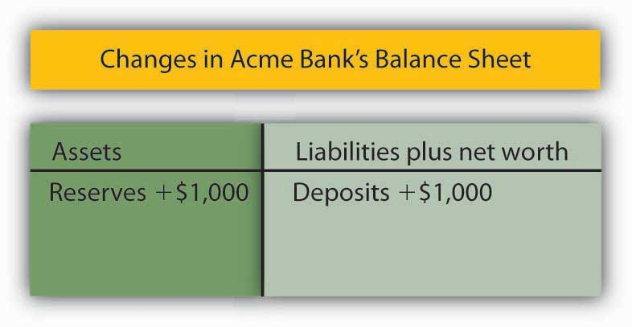
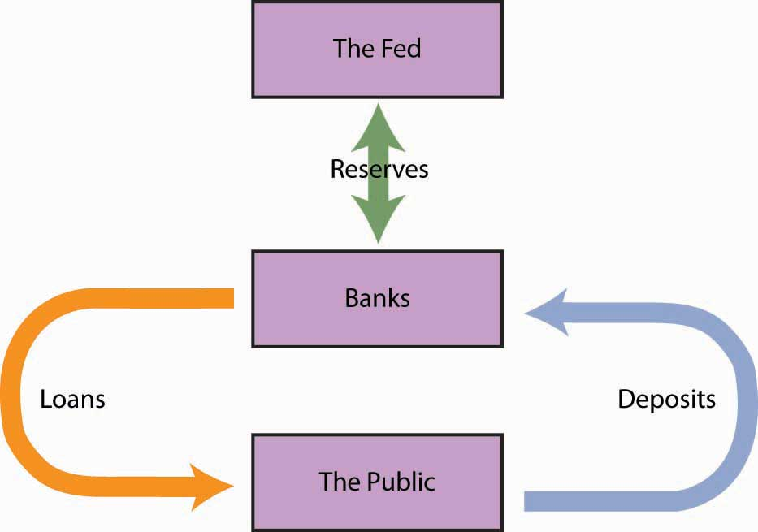

The Federal Reserve System of the United States, or Fed, is the U.S. central bank. Japan’s central bank is the Bank of Japan; the European Union has established the European Central Bank. Most countries have a central bank. A central bankA bank that acts as a banker to the central government, acts as a banker to banks, acts as a regulator of banks, conducts monetary policy, and supports the stability of the financial system. performs five primary functions: (1) it acts as a banker to the central government, (2) it acts as a banker to banks, (3) it acts as a regulator of banks, (4) it conducts monetary policy, and (5) it supports the stability of the financial system.
For the first 137 years of its history, the United States did not have a true central bank. While a central bank was often proposed, there was resistance to creating an institution with such enormous power. A series of bank panics slowly increased support for the creation of a central bank. The bank panic of 1907 proved to be the final straw. Bank failures were so widespread, and depositor losses so heavy, that concerns about centralization of power gave way to a desire for an institution that would provide a stabilizing force in the banking industry. Congress passed the Federal Reserve Act in 1913, creating the Fed and giving it all the powers of a central bank.
In creating the Fed, Congress determined that a central bank should be as independent of the government as possible. It also sought to avoid too much centralization of power in a single institution. These potentially contradictory goals of independence and decentralized power are evident in the Fed’s structure and in the continuing struggles between Congress and the Fed over possible changes in that structure.
In an effort to decentralize power, Congress designed the Fed as a system of 12 regional banks, as shown in Figure 24.8 "The 12 Federal Reserve Districts and the Cities Where Each Bank Is Located". Each of these banks operates as a kind of bankers’ cooperative; the regional banks are owned by the commercial banks in their districts that have chosen to be members of the Fed. The owners of each Federal Reserve bank select the board of directors of that bank; the board selects the bank’s president.
Figure 24.8 The 12 Federal Reserve Districts and the Cities Where Each Bank Is Located

Several provisions of the Federal Reserve Act seek to maintain the Fed’s independence. The board of directors for the entire Federal Reserve System is called the Board of Governors. The seven members of the board are appointed by the president of the United States and confirmed by the Senate. To ensure a large measure of independence from any one president, the members of the Board of Governors have 14-year terms. One member of the board is selected by the president of the United States to serve as chairman for a four-year term.
As a further means of ensuring the independence of the Fed, Congress authorized it to buy and sell federal government bonds. This activity is a profitable one that allows the Fed to pay its own bills. The Fed is thus not dependent on a Congress that might otherwise be tempted to force a particular set of policies on it. The Fed is limited in the profits it is allowed to earn; its “excess” profits are returned to the Treasury.
It is important to recognize that the Fed is technically not part of the federal government. Members of the Board of Governors do not legally have to answer to Congress, the president, or anyone else. The president and members of Congress can certainly try to influence the Fed, but they cannot order it to do anything. Congress, however, created the Fed. It could, by passing another law, abolish the Fed’s independence. The Fed can maintain its independence only by keeping the support of Congress—and that sometimes requires being responsive to the wishes of Congress.
In recent years, Congress has sought to increase its oversight of the Fed. The chairman of the Federal Reserve Board is required to report to Congress twice each year on its monetary policy, the set of policies that the central bank can use to influence economic activity.
The Fed’s principal powers stem from its authority to conduct monetary policy. It has three main policy tools: setting reserve requirements, operating the discount window and other credit facilities, and conducting open-market operations.
The Fed sets the required ratio of reserves that banks must hold relative to their deposit liabilities. In theory, the Fed could use this power as an instrument of monetary policy. It could lower reserve requirements when it wanted to increase the money supply and raise them when it wanted to reduce the money supply. In practice, however, the Fed does not use its power to set reserve requirements in this way. The reason is that frequent manipulation of reserve requirements would make life difficult for bankers, who would have to adjust their lending policies to changing requirements.
The Fed’s power to set reserve requirements was expanded by the Monetary Control Act of 1980. Before that, the Fed set reserve requirements only for commercial banks that were members of the Federal Reserve System. Most banks are not members of the Fed; the Fed’s control of reserve requirements thus extended to only a minority of banks. The 1980 act required virtually all banks to satisfy the Fed’s reserve requirements.
A major responsibility of the Fed is to act as a lender of last resort to banks. When banks fall short on reserves, they can borrow reserves from the Fed through its discount window. The discount rateThe interest rate charged by the Fed when it lends reserves to banks. is the interest rate charged by the Fed when it lends reserves to banks. The Board of Governors sets the discount rate.
Lowering the discount rate makes funds cheaper to banks. A lower discount rate could place downward pressure on interest rates in the economy. However, when financial markets are operating normally, banks rarely borrow from the Fed, reserving use of the discount window for emergencies. A typical bank borrows from the Fed only about once or twice per year.
Instead of borrowing from the Fed when they need reserves, banks typically rely on the federal funds market to obtain reserves. The federal funds marketA market in which banks lend reserves to one another. is a market in which banks lend reserves to one another. The federal funds rateThe interest rate charged when one bank lends reserves to another. is the interest rate charged for such loans; it is determined by banks’ demand for and supply of these reserves. The ability to set the discount rate is no longer an important tool of Federal Reserve policy.
To deal with the recent financial and economic conditions, the Fed greatly expanded its lending beyond its traditional discount window lending. As falling house prices led to foreclosures, private investment banks and other financial institutions came under increasing pressure. The Fed made credit available to a wide range of institutions in an effort to stem the crisis. In 2008, the Fed bailed out two major housing finance firms that had been established by the government to prop up the housing industry—Fannie Mae (the Federal National Mortgage Association) and Freddie Mac (the Federal Home Mortgage Corporation). Together, the two institutions backed the mortgages of half of the nation’s mortgage loans.Sam Zuckerman, “Feds Take Control of Fannie Mae, Freddie Mac,” The San Francisco Chronicle, September 8, 2008, p. A-1. It also agreed to provide $85 billion to AIG, the huge insurance firm. AIG had a subsidiary that was heavily exposed to mortgage loan losses, and that crippled the firm. The Fed determined that AIG was simply too big to be allowed to fail. Many banks had ties to the giant institution, and its failure would have been a blow to those banks. As the United States faced the worst financial crisis since the Great Depression, the Fed took center stage. Whatever its role in the financial crisis of 2007–2008, the Fed remains an important backstop for banks and other financial institutions needing liquidity. And for that, it uses the traditional discount window, supplemented with a wide range of other credit facilities. The Case in Point in this section discusses these new credit facilities.
The Fed’s ability to buy and sell federal government bonds has proved to be its most potent policy tool. A bondA promise by the issuer of the bond to pay the owner of the bond a payment or a series of payments on a specific date or dates. is a promise by the issuer of the bond (in this case the federal government) to pay the owner of the bond a payment or a series of payments on a specific date or dates. The buying and selling of federal government bonds by the Fed are called open-market operationsThe buying and selling of federal government bonds by the Fed.. When the Fed buys or sells government bonds, it adds or subtracts reserves from the banking system. Such changes affect the money supply.
Suppose the Fed buys a government bond in the open market. It writes a check on its own account to the seller of the bond. When the seller deposits the check at a bank, the bank submits the check to the Fed for payment. The Fed “pays” the check by crediting the bank’s account at the Fed, so the bank has more reserves.
The Fed’s purchase of a bond can be illustrated using a balance sheet. Suppose the Fed buys a bond for $1,000 from one of Acme Bank’s customers. When that customer deposits the check at Acme, checkable deposits will rise by $1,000. The check is written on the Federal Reserve System; the Fed will credit Acme’s account. Acme’s reserves thus rise by $1,000. With a 10% reserve requirement, that will create $900 in excess reserves and set off the same process of money expansion as did the cash deposit we have already examined. The difference is that the Fed’s purchase of a bond created new reserves with the stroke of a pen, where the cash deposit created them by removing $1,000 from currency in circulation. The purchase of the $1,000 bond by the Fed could thus increase the money supply by as much as $10,000, the maximum expansion suggested by the deposit multiplier.
Figure 24.9
Where does the Fed get $1,000 to purchase the bond? It simply creates the money when it writes the check to purchase the bond. On the Fed’s balance sheet, assets increase by $1,000 because the Fed now has the bond; bank deposits with the Fed, which represent a liability to the Fed, rise by $1,000 as well.
When the Fed sells a bond, it gives the buyer a federal government bond that it had previously purchased and accepts a check in exchange. The bank on which the check was written will find its deposit with the Fed reduced by the amount of the check. That bank’s reserves and checkable deposits will fall by equal amounts; the reserves, in effect, disappear. The result is a reduction in the money supply. The Fed thus increases the money supply by buying bonds; it reduces the money supply by selling them.
Figure 24.10 "The Fed and the Flow of Money in the Economy" shows how the Fed influences the flow of money in the economy. Funds flow from the public—individuals and firms—to banks as deposits. Banks use those funds to make loans to the public—to individuals and firms. The Fed can influence the volume of bank lending by buying bonds and thus injecting reserves into the system. With new reserves, banks will increase their lending, which creates still more deposits and still more lending as the deposit multiplier goes to work. Alternatively, the Fed can sell bonds. When it does, reserves flow out of the system, reducing bank lending and reducing deposits.
Figure 24.10 The Fed and the Flow of Money in the Economy
Individuals and firms (the public) make deposits in banks; banks make loans to individuals and firms. The Fed can buy bonds to inject new reserves into the system, thus increasing bank lending, which creates new deposits, creating still more lending as the deposit multiplier goes to work. Alternatively, the Fed can sell bonds, withdrawing reserves from the system, thus reducing bank lending and reducing total deposits.
The Fed’s purchase or sale of bonds is conducted by the Open Market Desk at the Federal Reserve Bank of New York, one of the 12 district banks. Traders at the Open Market Desk are guided by policy directives issued by the Federal Open Market Committee (FOMC). The FOMC consists of the seven members of the Board of Governors plus five regional bank presidents. The president of the New York Federal Reserve Bank serves as a member of the FOMC; the other 11 bank presidents take turns filling the remaining four seats.
The FOMC meets eight times per year to chart the Fed’s monetary policies. In the past, FOMC meetings were closed, with no report of the committee’s action until the release of the minutes six weeks after the meeting. Faced with pressure to open its proceedings, the Fed began in 1994 issuing a report of the decisions of the FOMC immediately after each meeting.
In practice, the Fed sets targets for the federal funds rate. To achieve a lower federal funds rate, the Fed goes into the open market buying securities and thus increasing the money supply. When the Fed raises its target rate for the federal funds rate, it sells securities and thus reduces the money supply.
Traditionally, the Fed has bought and sold short-term government securities; however, in dealing with the condition of the economy in 2009, wherein the Fed has already set the target for the federal funds rate at near zero, the Fed has announced that it will also be buying longer term government securities. In so doing, it hopes to influence longer term interest rates, such as those related to mortgages.
Suppose the Fed sells $8 million worth of bonds.
Well before most of the public became aware of the precarious state of the U.S. financial system, the Fed began to see signs of growing financial strains and to act on reducing them. In particular, the Fed saw that short-term interest rates that are often quite close to the federal funds rate began to rise markedly above it. The widening spread was alarming, because it suggested that lender confidence was declining, even for what are generally considered low-risk loans. Commercial paper, in which large companies borrow funds for a period of about a month to manage their cash flow, is an example. Even companies with high credit ratings were having to pay unusually high interest rate premiums in order to get funding, or in some cases could not get funding at all.
To deal with the drying up of credit markets, in late 2007 the Fed began to create an alphabet soup of new credit facilities. Some of these were offered in conjunction with the Department of the Treasury, which had more latitude in terms of accepting some credit risk. The facilities differed in terms of collateral used, the duration of the loan, which institutions were eligible to borrow, and the cost to the borrower. For example, the Primary Dealer Credit Facility (PDCF) allowed primary dealers (i.e., those financial institutions that normally handle the Fed’s open market operations) to obtain overnight loans. The Term Asset-Backed Securities Loan Facility (TALF) allowed a wide range of companies to borrow, using the primary dealers as conduits, based on qualified asset-backed securities related to student, auto, credit card, and small business debt, for a three-year period. Most of these new facilities were designed to be temporary. Starting in 2009 and 2010, the Fed began closing a number of them or at least preventing them from issuing new loans.
The common goal of all of these various credit facilities was to increase liquidity in order to stimulate private spending. For example, these credit facilities encouraged banks to pare down their excess reserves (which grew enormously as the financial crisis unfolded and the economy deteriorated) and to make more loans. In the words of Fed Chairman Ben Bernanke:
“Liquidity provision by the central bank reduces systemic risk by assuring market participants that, should short-term investors begin to lose confidence, financial institutions will be able to meet the resulting demands for cash without resorting to potentially destabilizing fire sales of assets. Moreover, backstopping the liquidity needs of financial institutions reduces funding stresses and, all else equal, should increase the willingness of those institutions to lend and make markets.”
The legal authority for most of these new credit facilities came from a particular section of the Federal Reserve Act that allows the Board of Governors “in unusual and exigent circumstances” to extend credit to a wide range of market players.
Sources: Ben S. Bernanke, “The Crisis and the Policy Response” (Stemp Lecture, London School of Economics, London, England, January 13, 2009); Richard DiCecio and Charles S. Gascon, “New Monetary Policy Tools?” Federal Reserve Bank of St. Louis Monetary Trends, May 2008; Federal Reserve Board of Governors Web site at http://www.federalreserve.gov/monetarypolicy/default.htm.